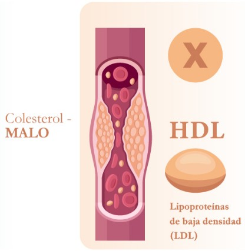
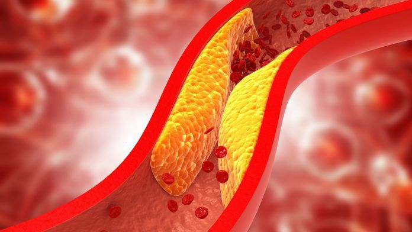

El colesterol LDL, conocido como colesterol malo, puede acumularse en las paredes de las arterias formando placas. Esto dificulta el flujo sanguíneo y aumenta el riesgo de enfermedades cardiovasculares, como ataques cardíacos y accidentes cerebrovasculares.

El colesterol HDL es conocido como colesterol bueno porque ayuda a eliminar el exceso de colesterol de la sangre y lo transporta al hígado para su eliminación. Mantener niveles adecuados de HDL ayuda a proteger el corazón y las arterias.
